景点概况
进入长白山游览，可以选择从东、南、西、北4个坡出发，因为东坡在朝鲜境内，所以只有南坡、北坡、西坡可以进入，四个坡的沿途景色也有很多不同。
必游景点TOP5
1
长白山天池
2410条点评火山喷发自然形成的火山口湖，是长白山的必游之地。
这里还包含景点： 天文峰 冠冕峰 天女浴躬池 三奇峰 观日峰 紫霞峰 长白山天池直升机体验 卧虎峰 Lake of Heaven (Lake Tianchi) (天池) 长白山玉江泉
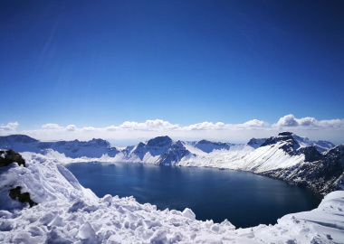
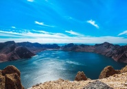
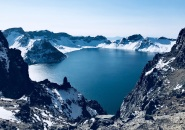
2
长白山国际度假区滑雪场
304 条点评达到冬奥会标准的亚洲顶级雪场

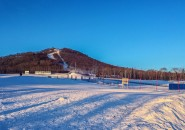
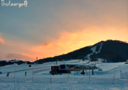
3
长白山国家级自然保护区
587 条点评一座休眠火山，不仅是中朝两国的界山，也是东北第一高峰
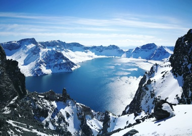
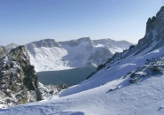
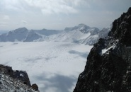
4
西坡天池
758 条点评登长梯上山顶，看天池最广阔的欣赏视角
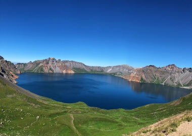
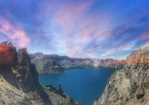
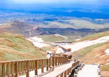
5
二道白河镇
235 条点评长白山脚下的小镇，环境特别的美，还可以品尝到当地特色美食。
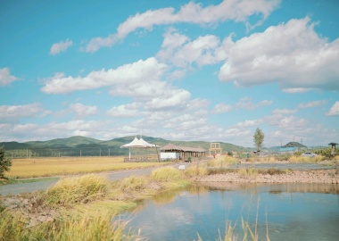
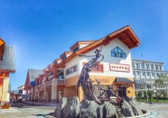
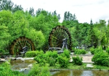